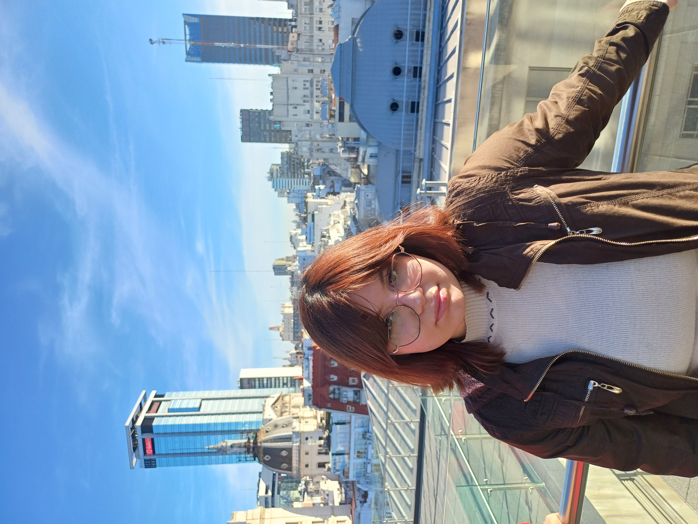

Buenas, soy Dana!
Tengo 21 años y soy de Quilmes. Actualmente estoy estudiando la tecnicatura en Desarrollo de Software en la Universidad Argentina de la Empresa.
Logros
- Participé en proyectos referidos a la automatización para la Feria de Ciencias. Uno de los proyectos más destacados se llama "Chapa farm" una granja compuesto por un invernadero y un criadero automático y un panel de control para manejar y supervisar parámetros como la humedad, la cantidad de agua y comida en los tanques suministrados, ventiladores, calefactores, nivel de monóxido de carbono, entre otras.
- Participé en las Olimpíadas Nacionales de Electrónica gestionadas por el INET. El proyecto a evaluar fue una incubadora de neonato
- Desarrollo de una alarma multifunción que integra el método Pomodoro. Bautizado como Pomoclock, destaco el uso de APIS para ver la hora local y el clima en determinadas regiones